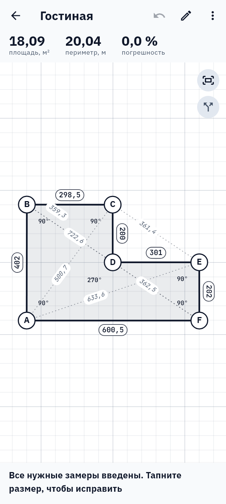
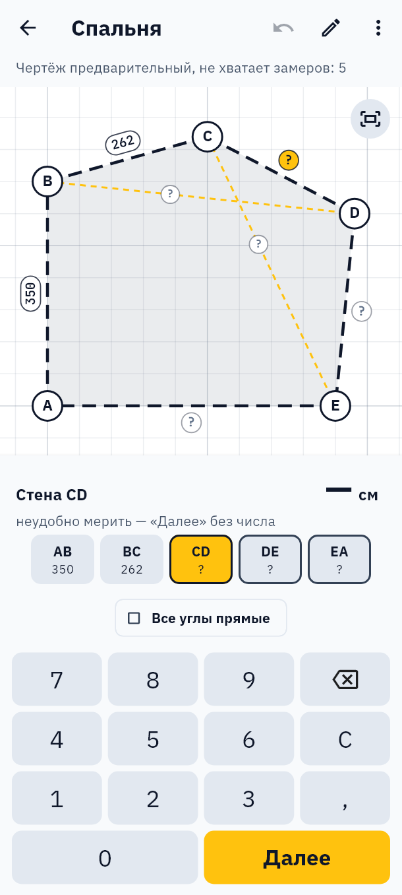
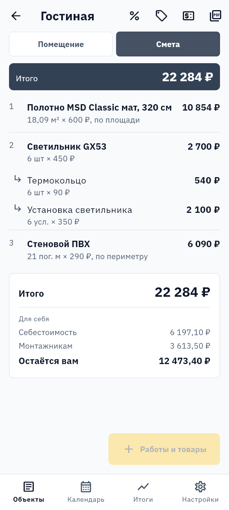
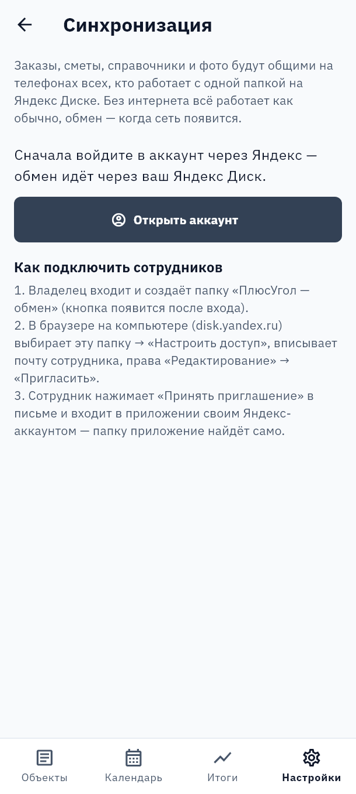

Стороны и диагонали — точный чертёж любой формы, смета из своей номенклатуры и PDF для цеха. Данные хранятся в телефоне.
Скачать для Android Скачать для Windows
14 дней без ограничений. На телефон — файлом APK, на компьютер — установщиком; обновляются сами.

Не запускается, вылетает, после обновления пропадает вход — а клиент ждёт.
Почта, пароль, письмо, которое не пришло, — и всё это до первого замера.
Углы встают по буквам, прямые углы прилипают сами.
Своя клавиатура с «Далее». Приложение подскажет, какой диагонали не хватает и какой размер подозрительный.
PDF для цеха, смета клиенту, наряд монтажникам — одним файлом на все помещения.



Заказы — в телефоне. Сеть нужна только для обмена и проверки лицензии.
14 дней с первого запуска. Вход — через Яндекс, без паролей.
Перед каждым обновлением — копия базы; если что-то пошло не так, приложение вернёт как было.
Каждый выпуск сначала ставится поверх старой версии на два настоящих телефона.
Справка «Как построить» и подсказки к сложным формам — прямо в приложении.
«Написать разработчику» — ID и версия подставляются сами.
Она вычислится по остальным размерам и будет помечена «расч.».
Резервная копия в один шаг и обмен через свой Яндекс Диск.
И всё, без чего замер не замер: срез и скругление угла, дуги, вырезы любой формы, швы, смета со связанными позициями, PDF сметы с вашим логотипом, договор со сквозным номером, календарь замеров и монтажей, оплаты монтажникам.
| Срок | Цена | В месяц |
|---|---|---|
| 1 месяц | 490 ₽ | 490 ₽ |
| 3 месяца | 1 290 ₽ | 430 ₽ |
| 1 год | 3 900 ₽ | 325 ₽ |
Первые 14 дней — без оплаты и без ограничений. Лицензия — на аккаунт, у каждого сотрудника своя; владелец продлевает их по ID. Одна лицензия — один основной телефон и один компьютер; основное устройство меняют не чаще раза в неделю. Без автосписаний: оплатили срок — и всё. Для тех, кто продлевает без перерыва, цена не растёт.
Нет. Он нужен только для обмена между телефонами и проверки лицензии раз в несколько дней.
Ничего: все заказы видны и правятся. Недоступны только новые заказы до продления.
Нет: резервная копия или вход тем же Яндекс-аккаунтом с обменом через Диск.
Нет. Лицензия работает на одном основном телефоне и одном компьютере. На другом телефоне программа закрыта, пока не сделаете его основным, — а менять основной можно раз в неделю. Сотрудникам — свои лицензии, заказы общие через Яндекс Диск.
В приложении: «Лицензия» → «Написать разработчику», ID подставится сам. Оплата переводом, срок продлевается в тот же день.
Пока только Android. Версия для компьютера (Windows) — в работе.
Да: владелец создаёт на Яндекс Диске папку обмена и приглашает сотрудников, заказы общие. Лицензия у каждого своя — владелец может продлить их все по ID. Инструкция.
Номенклатуру — да, выгрузкой и загрузкой Excel. Заказы из чужих программ — нет.
Вопрос, ошибка, продление лицензии — напишите разработчику. Из приложения удобнее: «Аккаунт» → «Написать разработчику», ID и версия подставятся сами.
Разработчик — Губайдуллин Равиль Радикович, самозанятый. Политика конфиденциальности.
14 дней без ограничений, без регистрации.